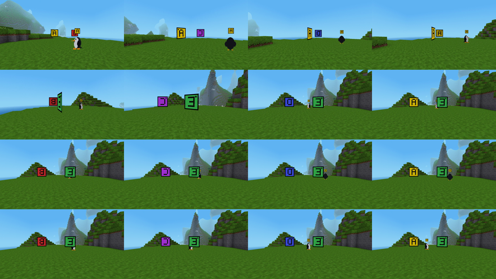

Eval: luanti_org__luanti_15105_mm
18 of 19 dimensions score 5. Dimension 4 (Symptom Specificity) scores 2, [Fail - Unspecific Symptoms]. The defect line ('do not display what they should') and the Expected line ('displays exactly what it was set up to display') are the generic pair the rubric fails, and no comparison image carries the defect. The line 'Seen from the front, all three floating elements display the same thing' is not true of the frames: the left board stays on A, the right board cycles A-B-C-D and the carried board stays on A. One with-image run (QRbsP53) said it could not tell whether the static A or the cycling was intended and left the frozen board alone. All three failing with-image runs missed exactly that defect (the original #15105 freeze). Everything else is clean. Local Docker runs on an image built from the delivered Dockerfile: oracle 1.0 twice with identical per-test results, nop 0.0 (f2p 0/7, p2p 4/4), and fix.patch applies at harbor_base. All 16 bundle files match the trial manifest hashes, and Oracle, Nop and the with-image trials share task checksum 8453d33c. Trials meet Option A: 0/3 no-image and exactly 1/4 with-image (Jospg2n). The passing run fixed defect 1 differently from the golden (setDirty inside mesh.cpp), and the tests accepted it, so they are behavioral. Fixing dimension 4 means editing instruction.md, which changes the checksum, so all 7 trials must be re-run.
Scorecard
Every dimension in rubric order. Click a cell to see what is wrong (or the evidence, if it passed).
python -I py_compile of verifier.py passes. recording.mp4 decodes (ffprobe: h264 1280x720, 30 fps, 960 frames, 32.0 s). Extra files are allowed: README.md, and environment/bugs/bug_01..04.patch (injected bugs, applied and deleted in the same RUN).Tasks/ and Trials/ (tar -tzf, first entry). Trials/ holds 7 runs: without_images/ has 3 (8UGU7ET, hdn43xb, thyaVza, job config n_attempts 3) and with_images/ has 4 (Jospg2n, QRbsP53, iGFzgKU, kPoSfoC, n_attempts 4). That is Option A. Oracle/, Nop/, Check/ and Analyze/ are also present.base commit (tag harbor_base), and every source file carries the same 2023-01-01 mtime, so content_cao.cpp, CBillboardSceneNode.cpp and mesh.cpp cannot be told from main.cpp. The bug patches are deleted in the same RUN that applies them.- recording.mp4 | bug_video | the post-injection base state (all 5 defects), recorded from this task's own build; checked against the nop failures and the contact sheets in evidence/. 0:00–0:15: left upright board stays on yellow A; right billboard cycles A→B→C→D with B, C and D mirrored; carried board stays on A; the penguin shows its back while walking towards the camera and its face while walking away. 0:23–0:31 (from behind): left board's back shows a mirrored green E and never changes | neutral name; role, description and scenario say bug video, captured_from_repo | true. The description (32 s, grassy landscape, two letter boards, penguin carrying a small board, walk-around) matches the frames. | no. All 4 with-image runs treated the clip as the bug state. QRbsP53's doubt was about which board's behavior is intended, not which asset is the bug (see dimension 4).
f2p vs asset (steps 1–4):
1) upright_sprite_animates: upright_sprite, spritediv 1x4, 1 s frames, must keep in step with an unattached billboard. Video: left upright board (same setup) frozen on A next to a cycling billboard. Same path.
2) upright_sprite_follows_set_sprite: upright_sprite whose frame is set by set_sprite() every second. Same stale-static-buffer path (updateTexturePos → setMeshBufferTextureCoords), and the upstream issue #15105 itself. The video's board is also driven by set_sprite. Complete fix? A fix that re-uploads only on timer ticks would leave set_sprite() (public Lua API, the issue's own case) frozen, so it is incomplete, not an alternative.
3) sprite_texture_is_not_mirrored: billboard quadrant texture. Video: B, C, D read mirrored; penguin side views reversed.
4) upright_sprite_back_is_not_mirrored: back of an upright quad. Video 0:23+: mirrored E.
5) camera_facing_sprite_shows_the_side_facing_the_camera: select_x at yaw 0/90/180/270, seen along -Z and +X. Video: penguin (select_x, automatic_face_movement_dir) walking a rectangle shows back and face swapped. The second axis rejects column-swap compensations, which are not correct fixes.
6) attached_sprite_animates: Video: carried billboard frozen on A.
7) attached_upright_sprite_animates: not pictured on its own. It needs the defect 1 and defect 5 fixes, both of which are general, so fixing exactly what the video shows passes it.
Cross-checks from runs on this image: nop fails all 7 f2p. QRbsP53 and kPoSfoC (golden parts 2–5) fail only f2p 1, 2 and 7. iGFzgKU (parts 2–4) also fails 6, so f2p 6 grades defect 5. Jospg2n (all 5, defect 1 fixed differently) passes 11/11. Every f2p tracks a defect shown in the video.
Step 7: all four injected defects are pictured.
COPY assets/recording.mp4 /app/.harbor_assets/. In the built image, sha256sum /app/.harbor_assets/recording.mp4 gives the same hash. All four references agree.git apply --check /solution/fix.patch prints FIX_APPLY_CHECK_OK. The local oracle run applied it through solve.sh and built.diff --git paths: irr/src/CBillboardSceneNode.cpp, src/client/content_cao.cpp, src/client/mesh.cpp, src/client/mesh.h. files_edited lists the same 4 paths, so the sets are equal. No test, doc, lockfile or changeset paths. The test files live only in tests/test.patch (tests/harvest_c01/…).- Defect 1: setDirty(EBT_VERTEX) inside mesh.cpp's existing setMeshBufferTextureCoords, without moving it (plausible: it extends the existing helper). Run Jospg2n on this image: 11/11, reward 1.0. Golden instead moves the helper into content_cao.cpp.
- Defect 1: hardware-mapping hint EHM_NEVER, or rebuilding the buffer. Valid. Render-identical, so the pixel probes cannot tell the difference (the CB states these pass).
- Defect 2: swap U in the billboard ctor (golden; Jospg2n, QRbsP53 and others pass sprite_texture_is_not_mirrored), or a mirrored texture matrix. Render-identical.
- Defect 3: re-order positions (golden; QRbsP53, iGFzgKU and kPoSfoC pass back_is_not_mirrored), or keep positions and swap UVs. Render-identical.
- Defect 4:
mob_dir - yaw (all runs pass), or a vector-based facing angle. Same column.- Defect 5: timer moved out of the not-attached branch (golden; QRbsP53 with a comment passes attached_sprite_animates).
Structure-level checks: the frame rate band is [0.5×span−1, 1.5×span+1] changes. Order is enforced only between samples under 0.9 s apart. Sync with the reference needs 70% agreement, and both entities are spawned together, so any correct timer fix stays in step. The orientation and select_x checks take the majority over the sampled frames. The rejected forms (swapped select_x columns, an upside-down billboard, a second timer that doubles the rate) are compensations that leave a visible defect elsewhere, so they are not correct fixes.
Trial cross-check: every f2p failure in the 6 failing runs is 'color stopped changing (animation is frozen)' on a defect the agent never touched (the patches do not modify mesh.cpp or the static buffer). None of them is an equivalent form being rejected.
cmake --build build --parallel 2, then run_test.py), so the verifier network_mode 'public' raises no Network Configuration issue. The time-based probes have wide tolerances (rate band ±50%, sync ≥70%, majority votes), and the scenario re-runs only on a harness error, not on a test failure. Local oracle re-run: reward 1.0 with per-test results identical to the first run. The timing-sensitive p2p reference_sprite_animates passed in all 7 trials, CB Oracle, CB Nop, and the local oracle ×2 and nop (12/12).+ instead of - on the yaw in select_x_by_camera, and the frame timer inside the not-attached branch. Each fix is the restoration a real developer would write, and the passing trial wrote it independently. All 4 injected defects are pictured in the video, and the evidence matches the post-injection repo.Delivery gate
Process checks run locally or read from the submitted runs. Each failure is scored under the dimension it belongs to, not as an extra dimension.
Trials
3 no-image runs (pass@3, all must fail) and 4 with-image runs (pass@4, exactly 1 must pass). Rewards come from each run's verifier/reward.txt.
| Trial | Mode | Reward | f2p | p2p | Min | Failed tests |
|---|---|---|---|---|---|---|
task_without_images__8UGU7ET | no-image | 0.0 | 4/7 | 4/4 | 7.7 | upright_sprite_animates upright_sprite_follows_set_sprite attached_upright_sprite_animates |
task_without_images__hdn43xb | no-image | 0.0 | 3/7 | 4/4 | 14.1 | upright_sprite_animates upright_sprite_follows_set_sprite attached_sprite_animates attached_upright_sprite_animates |
task_without_images__thyaVza | no-image | 0.0 | 4/7 | 4/4 | 6.9 | upright_sprite_animates upright_sprite_follows_set_sprite attached_upright_sprite_animates |
task_with_images__Jospg2n | with-image | 1.0 | 7/7 | 4/4 | 23.0 | — |
task_with_images__QRbsP53 | with-image | 0.0 | 4/7 | 4/4 | 16.2 | upright_sprite_animates upright_sprite_follows_set_sprite attached_upright_sprite_animates |
task_with_images__iGFzgKU | with-image | 0.0 | 3/7 | 4/4 | 9.6 | upright_sprite_animates upright_sprite_follows_set_sprite attached_sprite_animates attached_upright_sprite_animates |
task_with_images__kPoSfoC | with-image | 0.0 | 4/7 | 4/4 | 6.3 | upright_sprite_animates upright_sprite_follows_set_sprite attached_upright_sprite_animates |
Issues & suggested fixes
Instruction – Symptom Specificity 2 · [Fail - Unspecific Symptoms]
What is wrong. The defect and expected result are generic ('do not display what they should' / 'display what it was set up to display'), and no comparison image carries them. The one concrete claim, 'Seen from the front, all three floating elements display the same thing', is true of the set-up but not of the frames. That turns the only clue to defect 1 (one board is frozen while an identical one cycles) into an ambiguity. QRbsP53 explicitly could not tell the bug from intended behavior, and since V25 that alone fails this dimension.
Suggested fix. Name the element by type and state the defect classes and the expected result in text. Leave which board, when and why to the video. Suggested wording (no cause, no file, no instance): 'Two letter boards float side by side, and a penguin walks a loop in front of them carrying a smaller letter board. All three boards are set up with the same animated letter sheet. At several moments, a board shows the wrong letter (it does not step through its letters like the identical board next to it, or a letter reads the wrong way round), and the penguin's picture does not match the way it is walking. Expected: every board steps through its letters in order, in step with the identical boards, and every letter and picture reads correctly from the front and from behind. The penguin always shows the side of itself that faces the camera, wherever the element is placed, turned or carried.' At minimum, replace 'display the same thing' with 'are set up to display the same animated letter sheet'. Editing instruction.md changes the task checksum, so all 7 trials (3 no-image + 4 with-image) must be re-run. A clearer prompt may raise the with-image pass rate, so re-check that it still lands on exactly 1/4 (or move to Option B, 1–2/8).
Dimension details
1. Structure – Task Bundle Files 5 · Pass
| Evidence | All 11 fixed files are present and non-empty: task.toml 7100 B, instruction.md 1386, evidence_bundle.json 2317, environment/Dockerfile 3203, environment/assets/ASSET_MANIFEST.json 641, solution/fix.patch 4767, solution/solve.sh 349, tests/config.json 1158, tests/test.patch 32626, tests/test.sh 9502, tests/verifier.py 4816. All three JSON files parse, and task.toml parses with tomllib. python -I py_compile of verifier.py passes. recording.mp4 decodes (ffprobe: h264 1280x720, 30 fps, 960 frames, 32.0 s). Extra files are allowed: README.md, and environment/bugs/bug_01..04.patch (injected bugs, applied and deleted in the same RUN). |
|---|---|
| What is wrong | Nothing found. |
| Suggested fix | None. |
2. Structure – Deliverables & Packaging 5 · Pass
| Evidence | Attempt1/ holds Tasks/ (capital T) and Trials/ as root-level siblings. Neither is nested in the other. Packed as Tasks.tar.gz and Trials.tar.gz for this review, they unpack to Tasks/ and Trials/ (tar -tzf, first entry). Trials/ holds 7 runs: without_images/ has 3 (8UGU7ET, hdn43xb, thyaVza, job config n_attempts 3) and with_images/ has 4 (Jospg2n, QRbsP53, iGFzgKU, kPoSfoC, n_attempts 4). That is Option A. Oracle/, Nop/, Check/ and Analyze/ are also present. |
|---|---|
| What is wrong | Nothing found. Reminder: Attempt1 has the folders, not the archives. Upload Tasks.tar.gz and Trials.tar.gz, each as its own archive with those top-level names. |
| Suggested fix | None. |
3. Instruction – Requires Visual Evidence 5 · Pass
| Evidence | From the text alone, a developer learns only that 'floating elements and the penguin do not display what they should' at 'several moments', with 'separate, independent defects'. The text names no defect (frozen frame, mirrored letters, wrong side, mirrored back) and no element type (upright_sprite, sprite, select_x_by_camera). The only signal for defect 1 (the original #15105 freeze: the left board stays on A while the right one cycles) is in the video. The no-image runs confirm this: 0/3 passed, and none found defect 1. All three failed upright_sprite_animates, upright_sprite_follows_set_sprite and attached_upright_sprite_animates. With the video, Jospg2n wrote 'The left element was stuck on its first frame while the right one cycled A→B→C→D' and fixed it. The image path resolves to /app/.harbor_assets/recording.mp4 in the built image (sha256 5d5a0bf7…, 1947703 B). No leak: no repo name, URL, file list, function name or mechanism. The image has the git history replaced by one base commit (tag harbor_base), and every source file carries the same 2023-01-01 mtime, so content_cao.cpp, CBillboardSceneNode.cpp and mesh.cpp cannot be told from main.cpp. The bug patches are deleted in the same RUN that applies them. |
|---|---|
| What is wrong | Nothing found. Non-graded: a code audit finds the injected defects without the video. All 3 no-image runs fixed defects 2 (billboard U flip), 3 (mirrored back quad) and 4 (select_x yaw sign), and 2 of 3 fixed defect 5 (attached frame timer). The Expected line ('from every side … however it is placed, turned or carried') steers that audit. The video is required only for defect 1. |
| Suggested fix | None required. |
4. Instruction – Symptom Specificity 2 · Fail
[Fail - Unspecific Symptoms]
| Evidence | Table: element | defect (text or image?) | expected (text or image?) | comparison image | clue left to image | described correctly? - 'two floating elements', 'a smaller floating element', 'the penguin' (named by position, not type; the text never says they are letter boards or pictures) | 'do not display what they should' (text; generic, no defect kind such as frozen, mirrored or wrong side) | 'Each of these elements displays exactly what it was set up to display, at every moment and from every side' (text; tautological, because what each was set up to display is not given anywhere) | none: recording.mp4 is the only asset and shows only the bug state | which element, when and from which side | partly not: 'Seen from the front, all three floating elements display the same thing' is untrue of the frames. In the contact sheet at 0:04–0:06 the left board shows A, the right board shows B, C and D, and the carried board shows A. Rubric checks: (1) instruction check: the elements are named, but neither the defect nor the expected result is stated in text or shown by a comparison image, so this fails. (2) symptom-specificity: 'do not display what they should' / 'display what it was set up to display' is the rubric's own fail pattern ('something does not render correctly' / 'it should render correctly'). The extra context is a time cue ('at several moments', 'from about 0:15') and a list of things that are correct (terrain, hills, sky), which is not a defect. (3) image-dependency: the text does not say what kind of problem it is and does not point to where the correct result can be seen. With-image trajectories, all four read: Jospg2n (pass) read 'all three set up to animate identically… the other two were frozen'. QRbsP53 (fail), final message: 'in the video the right element switches picture exactly once per second… I've treated that cycling as intended… If it's meant to show "A" only, the cause is probably how that element is set up in your scene'. It could not tell whether the static A or the cycling was the bug, so it left defect 1 unfixed. iGFzgKU (fail), step 44: 'Everything else in the animation path looks right'. It never flagged the left board's static frame and also missed the carried board. kPoSfoC (fail) saw that the carried board 'stayed on "A" when it should have cycled frames like the right-hand one' but never flagged the left board, which shows the same symptom. All three failing with-image runs fail exactly the defect-1 f2p trio, with 4/4 p2p. |
|---|---|
| What is wrong | The defect and expected result are generic ('do not display what they should' / 'display what it was set up to display'), and no comparison image carries them. The one concrete claim, 'Seen from the front, all three floating elements display the same thing', is true of the set-up but not of the frames. That turns the only clue to defect 1 (one board is frozen while an identical one cycles) into an ambiguity. QRbsP53 explicitly could not tell the bug from intended behavior, and since V25 that alone fails this dimension. |
| Suggested fix | Name the element by type and state the defect classes and the expected result in text. Leave which board, when and why to the video. Suggested wording (no cause, no file, no instance): 'Two letter boards float side by side, and a penguin walks a loop in front of them carrying a smaller letter board. All three boards are set up with the same animated letter sheet. At several moments, a board shows the wrong letter (it does not step through its letters like the identical board next to it, or a letter reads the wrong way round), and the penguin's picture does not match the way it is walking. Expected: every board steps through its letters in order, in step with the identical boards, and every letter and picture reads correctly from the front and from behind. The penguin always shows the side of itself that faces the camera, wherever the element is placed, turned or carried.' At minimum, replace 'display the same thing' with 'are set up to display the same animated letter sheet'. Editing instruction.md changes the task checksum, so all 7 trials (3 no-image + 4 with-image) must be re-run. A clearer prompt may raise the with-image pass rate, so re-check that it still lands on exactly 1/4 (or move to Option B, 1–2/8). |
5. Instruction – Task Type 5 · Pass
| Evidence | task_type = temporal_interaction ('Fix a defect that only appears across a sequence of interactions / state transitions'). The instruction describes a 32 s clip in which the defects show up 'at several moments' as the scene runs and the camera walks around ('From about 0:15 the camera walks around the left floating element'). It asks that each element display correctly 'at every moment and from every side'. The defects are temporal (frames that never advance on the left board and the carried board) and view-dependent (the back face is seen only after the walk-around, and the penguin's side changes with its walking direction). That reasonably fits temporal_interaction. |
|---|---|
| What is wrong | Nothing found. |
| Suggested fix | None. |
6. Image – Evidence Quality 5 · Pass
| Evidence | Naming table: file | role | what the frames show | claims | true? | agents confused? - recording.mp4 | bug_video | the post-injection base state (all 5 defects), recorded from this task's own build; checked against the nop failures and the contact sheets in evidence/. 0:00–0:15: left upright board stays on yellow A; right billboard cycles A→B→C→D with B, C and D mirrored; carried board stays on A; the penguin shows its back while walking towards the camera and its face while walking away. 0:23–0:31 (from behind): left board's back shows a mirrored green E and never changes | neutral name; role, description and scenario say bug video, captured_from_repo | true. The description (32 s, grassy landscape, two letter boards, penguin carrying a small board, walk-around) matches the frames. | no. All 4 with-image runs treated the clip as the bug state. QRbsP53's doubt was about which board's behavior is intended, not which asset is the bug (see dimension 4). f2p vs asset (steps 1–4): 1) upright_sprite_animates: upright_sprite, spritediv 1x4, 1 s frames, must keep in step with an unattached billboard. Video: left upright board (same setup) frozen on A next to a cycling billboard. Same path. 2) upright_sprite_follows_set_sprite: upright_sprite whose frame is set by set_sprite() every second. Same stale-static-buffer path (updateTexturePos → setMeshBufferTextureCoords), and the upstream issue #15105 itself. The video's board is also driven by set_sprite. Complete fix? A fix that re-uploads only on timer ticks would leave set_sprite() (public Lua API, the issue's own case) frozen, so it is incomplete, not an alternative. 3) sprite_texture_is_not_mirrored: billboard quadrant texture. Video: B, C, D read mirrored; penguin side views reversed. 4) upright_sprite_back_is_not_mirrored: back of an upright quad. Video 0:23+: mirrored E. 5) camera_facing_sprite_shows_the_side_facing_the_camera: select_x at yaw 0/90/180/270, seen along -Z and +X. Video: penguin (select_x, automatic_face_movement_dir) walking a rectangle shows back and face swapped. The second axis rejects column-swap compensations, which are not correct fixes. 6) attached_sprite_animates: Video: carried billboard frozen on A. 7) attached_upright_sprite_animates: not pictured on its own. It needs the defect 1 and defect 5 fixes, both of which are general, so fixing exactly what the video shows passes it. Cross-checks from runs on this image: nop fails all 7 f2p. QRbsP53 and kPoSfoC (golden parts 2–5) fail only f2p 1, 2 and 7. iGFzgKU (parts 2–4) also fails 6, so f2p 6 grades defect 5. Jospg2n (all 5, defect 1 fixed differently) passes 11/11. Every f2p tracks a defect shown in the video. Step 7: all four injected defects are pictured. |
|---|---|
| What is wrong | Nothing found. |
| Suggested fix | None. |
7. Metadata – task_type 5 · Pass
| Evidence | temporal_interaction is one of the seven values. The asset is a 32 s video whose defects appear across state changes over time: animation frames that should advance, a camera walk-around that reveals the back face, and a walking subject whose shown side depends on its heading. That fits 'a defect that only appears across a sequence of interactions / state transitions'. visual_bug_fix would also be defensible, which the rubric does not penalize. |
|---|---|
| What is wrong | Nothing found. |
| Suggested fix | None. |
8. Evidence – Chain Consistency 5 · Pass
| Evidence | File: environment/assets/recording.mp4, 1947703 B, sha256 5d5a0bf76ef7f1ff2846b97f468641786317e110dfc354e1732c9d80194f8ed9. ASSET_MANIFEST.json: file recording.mp4, container_path /app/.harbor_assets/recording.mp4, same bytes and sha256. evidence_bundle.json: local_path /app/.harbor_assets/recording.mp4, same bytes and sha256, role bug_video, url and source_url empty (captured_from_repo). instruction.md: '/app/.harbor_assets/recording.mp4'. Dockerfile: COPY assets/recording.mp4 /app/.harbor_assets/. In the built image, sha256sum /app/.harbor_assets/recording.mp4 gives the same hash. All four references agree. |
|---|---|
| What is wrong | Nothing found. |
| Suggested fix | None. |
9. Golden Fix – Applies Cleanly 5 · Pass
| Evidence | In a fresh container from qc15105:task (built locally from the delivered environment/Dockerfile): HEAD = harbor_base, and git apply --check /solution/fix.patch prints FIX_APPLY_CHECK_OK. The local oracle run applied it through solve.sh and built. |
|---|---|
| What is wrong | Nothing found. |
| Suggested fix | None. |
10. Golden Fix – Source-Only Scope 5 · Pass
| Evidence | fix.patch diff --git paths: irr/src/CBillboardSceneNode.cpp, src/client/content_cao.cpp, src/client/mesh.cpp, src/client/mesh.h. files_edited lists the same 4 paths, so the sets are equal. No test, doc, lockfile or changeset paths. The test files live only in tests/test.patch (tests/harvest_c01/…). |
|---|---|
| What is wrong | Nothing found. |
| Suggested fix | None. |
11. Tests – Implementation Overfit 5 · Pass
| Evidence | Every assertion classifies rendered pixels. Each one takes the nearest palette colour of a fixed screen box, allowing for brightness scaling. Nothing compares a source string, file name, function name or exact bytes, so no value-level output-form issue arises. Equivalence table: alternative | valid/plausible | result. - Defect 1: setDirty(EBT_VERTEX) inside mesh.cpp's existing setMeshBufferTextureCoords, without moving it (plausible: it extends the existing helper). Run Jospg2n on this image: 11/11, reward 1.0. Golden instead moves the helper into content_cao.cpp. - Defect 1: hardware-mapping hint EHM_NEVER, or rebuilding the buffer. Valid. Render-identical, so the pixel probes cannot tell the difference (the CB states these pass). - Defect 2: swap U in the billboard ctor (golden; Jospg2n, QRbsP53 and others pass sprite_texture_is_not_mirrored), or a mirrored texture matrix. Render-identical. - Defect 3: re-order positions (golden; QRbsP53, iGFzgKU and kPoSfoC pass back_is_not_mirrored), or keep positions and swap UVs. Render-identical. - Defect 4: mob_dir - yaw (all runs pass), or a vector-based facing angle. Same column.- Defect 5: timer moved out of the not-attached branch (golden; QRbsP53 with a comment passes attached_sprite_animates). Structure-level checks: the frame rate band is [0.5×span−1, 1.5×span+1] changes. Order is enforced only between samples under 0.9 s apart. Sync with the reference needs 70% agreement, and both entities are spawned together, so any correct timer fix stays in step. The orientation and select_x checks take the majority over the sampled frames. The rejected forms (swapped select_x columns, an upside-down billboard, a second timer that doubles the rate) are compensations that leave a visible defect elsewhere, so they are not correct fixes. Trial cross-check: every f2p failure in the 6 failing runs is 'color stopped changing (animation is frozen)' on a defect the agent never touched (the patches do not modify mesh.cpp or the static buffer). None of them is an equivalent form being rejected. |
|---|---|
| What is wrong | Nothing found. |
| Suggested fix | None. |
12. Tests – f2p/p2p Identifier Validity 5 · Pass
| Evidence | task.toml and tests/config.json hold identical lists: 7 f2p and 4 p2p, in the same order (python equality True). JUnit (oracle) has 11 testcases with classname 'sprite_probe' and names upright_sprite_animates, upright_sprite_follows_set_sprite, sprite_texture_is_not_mirrored, upright_sprite_back_is_not_mirrored, camera_facing_sprite_shows_the_side_facing_the_camera, attached_sprite_animates, attached_upright_sprite_animates, reference_sprite_animates, upright_sprite_renders_a_palette_color, reference_sprite_renders_a_palette_color and upright_sprite_front_is_not_mirrored. verifier.py's key 'classname name' gives 'sprite_probe <name>', an exact match for each id. reward_detail.json shows no 'missing' or 'ambiguous'. |
|---|---|
| What is wrong | Nothing found. |
| Suggested fix | None. |
13. Tests – p2p Classification 5 · Pass
| Evidence | Local nop: p2p 4/4 pass (reference_sprite_animates, upright_sprite_renders_a_palette_color, reference_sprite_renders_a_palette_color, upright_sprite_front_is_not_mirrored). Local oracle and re-run: 4/4. The CB's Nop and Oracle agree, and so do all 7 trials (4/4 each). |
|---|---|
| What is wrong | Nothing found. |
| Suggested fix | None. |
14. Tests – Discriminating (f2p) 5 · Pass
| Evidence | Local nop: all 7 f2p fail. The four animation probes fail with 'color stopped changing (animation is frozen)'; sprite_texture_is_not_mirrored, upright_sprite_back_is_not_mirrored and camera_facing_sprite_shows_the_side_facing_the_camera fail with wrong corners or columns. Local oracle (twice): all 7 pass. The CB's Nop and Oracle show the same split. |
|---|---|
| What is wrong | Nothing found. |
| Suggested fix | None. |
15. Tests – Determinism 5 · Pass
| Evidence | Headless and pinned: Xvfb with Mesa llvmpipe (LIBGL_ALWAYS_SOFTWARE=1), the devtest game restored from harbor_base, fixed probe textures shipped in test.patch, a fixed world, and fps_max 30. test.sh installs nothing (cmake --build build --parallel 2, then run_test.py), so the verifier network_mode 'public' raises no Network Configuration issue. The time-based probes have wide tolerances (rate band ±50%, sync ≥70%, majority votes), and the scenario re-runs only on a harness error, not on a test failure. Local oracle re-run: reward 1.0 with per-test results identical to the first run. The timing-sensitive p2p reference_sprite_animates passed in all 7 trials, CB Oracle, CB Nop, and the local oracle ×2 and nop (12/12). |
|---|---|
| What is wrong | Nothing found. Non-graded: the probes sample wall-clock time under a software renderer. A heavily loaded grader could still drift. So far all 12 runs agree. |
| Suggested fix | None. |
16. Hardening – Difficulty (Model Trial Fails) 5 · Pass
| Evidence | Option A. No-image (3): 8UGU7ET 0.0 (f2p 4/7), hdn43xb 0.0 (3/7), thyaVza 0.0 (4/7). All fail. With-image (4): Jospg2n 1.0 (7/7), QRbsP53 0.0 (4/7), iGFzgKU 0.0 (3/7), kPoSfoC 0.0 (4/7). Exactly 1/4. Runs are told apart by job path: trial_tasks/…/task_without_images vs task_with_images. The no-image trajectories confirm the assets were missing: 8UGU7ET says '/app/.harbor_assets/ is empty and recording.mp4 isn't anywhere'; hdn43xb and thyaVza say it 'doesn't exist'. Model anthropic/claude-opus-5-5. Run times: 6.3–23.0 min (informational). |
|---|---|
| What is wrong | Nothing found. |
| Suggested fix | None. If you re-word instruction.md for dimension 4, re-run all 7 trials and re-check that the with-image result is still exactly 1/4. |
17. Hardening – Real & Feasible 5 · Pass
| Evidence | Defect 1 is the real upstream issue #15105 (PR 15123). The upright_sprite texcoords are rewritten in a static GPU buffer that is never marked dirty, and the golden mirrors upstream's setDirty fix. The 4 injected bugs are coherent one-line regressions: billboard U flipped in the ctor, the back quad reusing the front's corners with reversed winding, + instead of - on the yaw in select_x_by_camera, and the frame timer inside the not-attached branch. Each fix is the restoration a real developer would write, and the passing trial wrote it independently. All 4 injected defects are pictured in the video, and the evidence matches the post-injection repo. |
|---|---|
| What is wrong | Nothing found. |
| Suggested fix | None. |
18. Gate – Oracle/Nop 5 · Pass
| Evidence | Local runs in fresh containers from qc15105:task (built from the delivered bundle; 4 CPUs, 8 GB; solve.sh, then test.sh as harbor does). Oracle: reward 1.0, f2p 7/7, p2p 4/4. Oracle re-run: reward 1.0, same per-test results. Nop: reward 0.0, f2p 0/7, p2p 4/4. Every console shows the banners '== captured submission.patch', '== applying test.patch ==', '== running f2p + p2p tests ==', '== computing reward ==' and 'reward=', with no 'could not apply test.patch'. The CB's shipped Oracle (1.0) and Nop (0.0) agree and carry task checksum 8453d33c…, the same as the with-image trials. |
|---|---|
| What is wrong | Nothing found. |
| Suggested fix | None. |
19. Unauditable 5 · Pass
| Evidence | A complete, coherent bundle with runs that could be audited end to end. |
|---|---|
| What is wrong | Nothing found. |
| Suggested fix | None. |
Visual evidence

